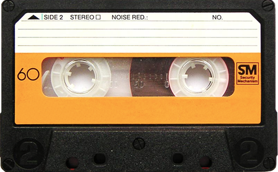

THE LIFE AND DEATH OF
AUDIO CASSETTE
The first cassette player (although mono) designed for use in car dashes was introduced in 1968.
Between the early 1970s and the early 2000s, the cassette was one of the two most common formats
for prerecorded music
01

02
INTRODUCTION
In 1962, Philips invented the Compact Cassette medium for audio storage, introducing it in Europe on 30 August 1963 at the Berlin Radio Show,and in the United States (under the Norelco brand) in November 1964, with the trademark name Compact Cassette. The team at Philips was led by Lou Ottens in Hasselt, Belgium.